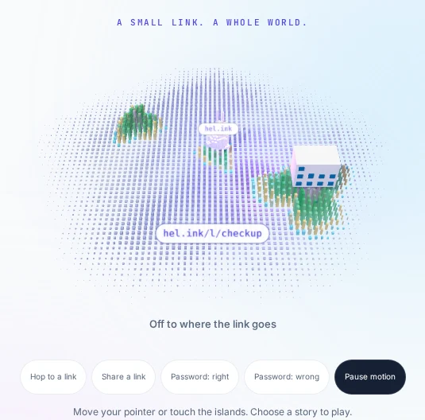
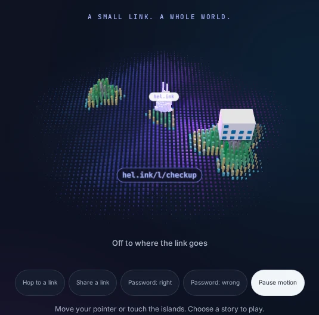

HOP · أداة تقصير روابط HOP
اختصار الروابط، رموز QR، وتحليلات النقرات.
اختصر الروابط، وتتبع كل نقرة، وحلل بيانات الزوار حسب الدولة والجهاز، واحفظ سلامتهم بفحص أمني متقدم.
برنامج مجاني ومفتوح المصدر بترخيص MIT. هل تبحث عن صفحات البايو؟ تفضل بزيارة BioHop.


فتح لوحة التحكم ↗الميزات الرئيسية
- تقصير فائق السرعة
عناوين مخصصة سهلة التذكر أو معرفات عشوائية تُقدّم في hel.ink/l/{slug} بتوجيه سريع.
- رموز QR ديناميكية
توليد رموز QR عالية الدقة بصيغتي SVG/PNG للطباعة أو المشاركة الإلكترونية.
- تحليلات نقرات معمقة
تتبع الدول (GeoIP)، والأجهزة، والمتصفحات، وأنظمة التشغيل، والمصادر فورياً.
- أمان وحماية تلقائية
فحص استباقي عبر hop/safety وقوائم الحظر المشتركة لحماية زوارك من التهديدات.
- تحكم دقيق في الروابط
حدد تاريخ انتهاء الصلاحية، والحد الأقصى للنقرات، والحماية بكلمة مرور.
- المجلدات والوسوم
نظّم الروابط داخل مجلدات وأضف وسوماً للحملات لإدارة سهلة وتقارير شاملة.
- دخول موحد بـ HOP ID
سجّل الدخول بحساب HOP ID المركزي دون الحاجة لحسابات متعددة.
- واجهة برمجة REST للمطورين
واجهة متكاملة مع رموز مصادقة ذات صلاحيات محددة لإنشاء الروابط ومتابعتها آلياً.
شغّل LinkHop بنفسك
برنامج مجاني ومفتوح المصدر بترخيص MIT. هل تبحث عن صفحات البايو؟ تفضل بزيارة BioHop.
LinkHop


الأسئلة المتكررة
أين ذهبت صفحات الروابط الشخصية (Bio)؟
تم فصل صفحات البايو لتصبح تطبيقاً مستقلاً غنياً بالميزات باسم BioHop (bio.hel.ink). الروابط القديمة تحول تلقائياً.
هل يمكنني استخدام اسم مخصص للرابط؟
نعم، يمكن للمستخدمين المسجلين اختيار عنوان قصير مخصص لأي رابط إذا كان متاحاً.
كيف تحمي تحليلات النقرات خصوصية المستخدمين؟
تُجمع البيانات بشكل إحصائي مجهول دون حفظ معلومات شخصية خام، وتُنظف السجلات بانتظام.
هل LinkHop مفتوح المصدر؟
نعم، LinkHop مرخص بموجب رخصة MIT الحرة للجميع.
عائلة HOP
LinkHop جزء من عائلة تطبيقات ويب مفتوحة المصدر تحترم الخصوصية.
| التطبيق | الوظيفة | العنوان المباشر | الكود |
|---|---|---|---|
| HOP ID | بوابة الحسابات ودخول HOP ID | hel.ink · hub.hel.ink | navi-crwn/HEL.ink |
| LinkHop | تقصير الروابط ورموز QR والتحليلات | link.hel.ink · hel.ink/l/{slug} | هذا المستودع |
| BioHop | صفحات الروابط الشخصية والقوالب | bio.hel.ink · hel.ink/b/{slug} | navi-crwn/BioHop |
| PixelHop | استضافة الصور والوسائط | pixel.hel.ink · p.hel.ink | navi-crwn/PixelHop |
| NoteHop | ملاحظات مشفرة على جهاز العميل | note.hel.ink · n.hel.ink | navi-crwn/NoteHop |
المساعدة والدعم
هل وجدت خطأ أو تحتاج مساعدة؟ افتح تذكرة عبر قضايا GitHub أو أرسل طلب سحب.